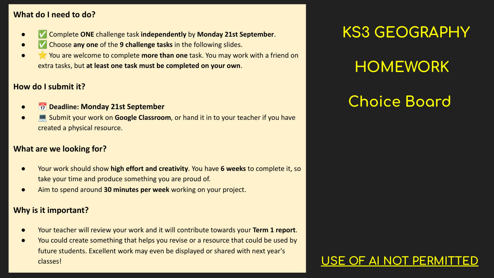
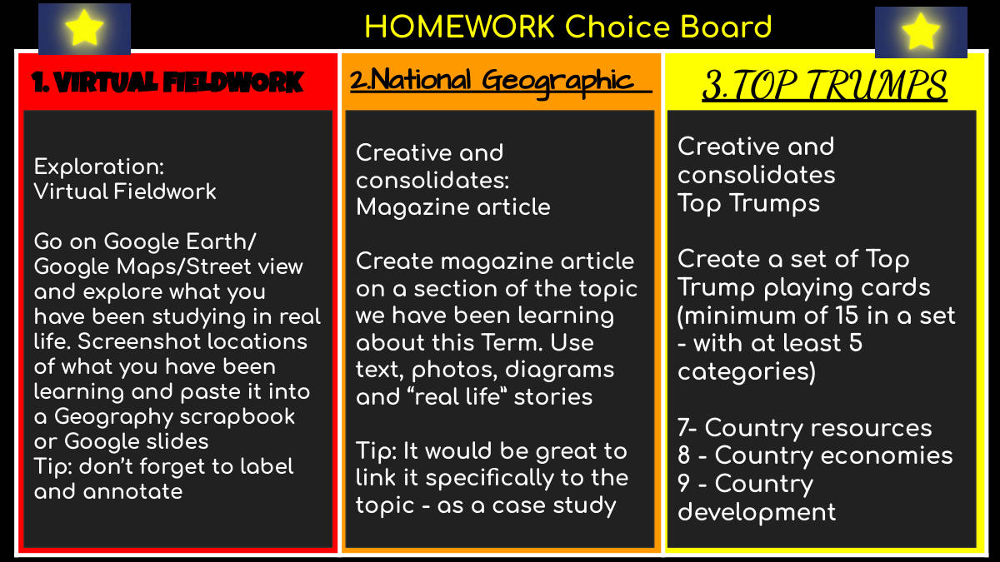
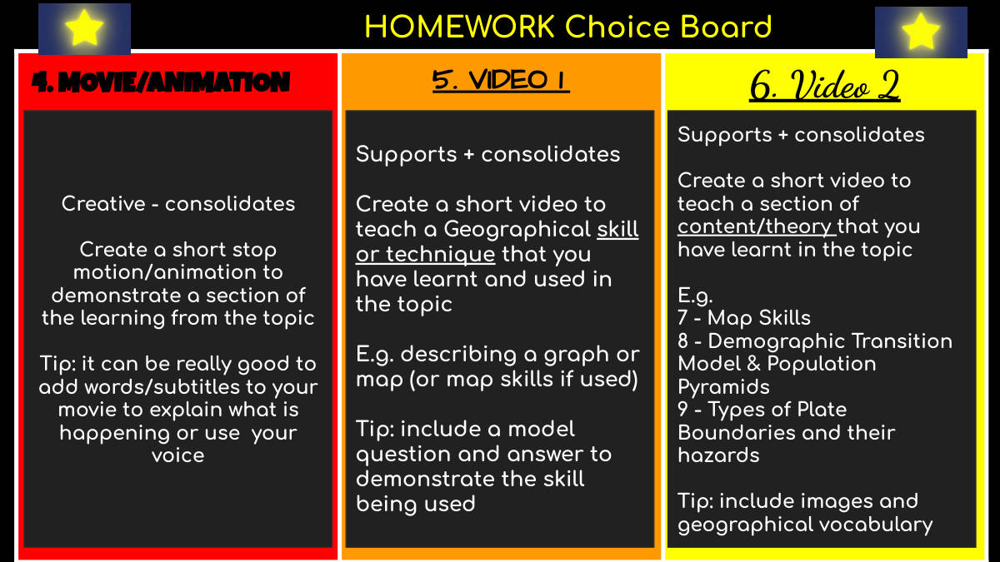
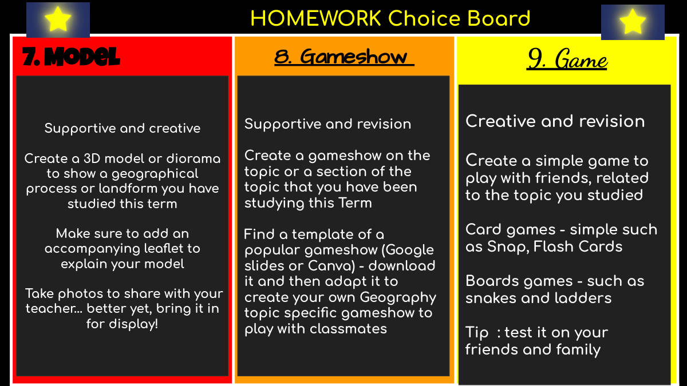
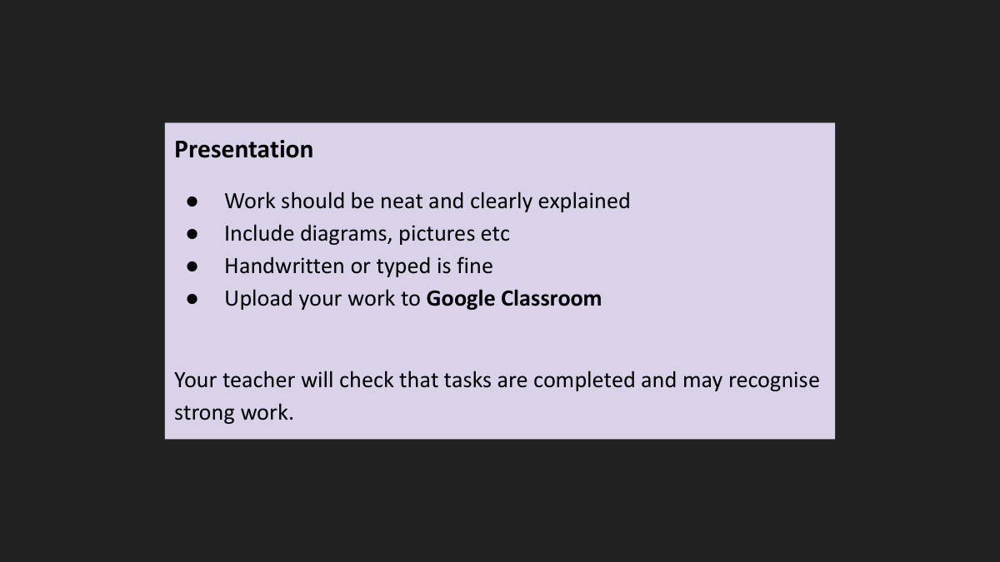

이 자료는 Homework 단원의 과제(assignment) 안내다. 뒤에 나오는 슬라이드에 9개의 챌린지 과제(9 challenge tasks)가 있고, 그중 딱 하나를 골라 혼자 힘으로(independently) 끝내면 된다. 더 하고 싶으면 여러 개를 해도 되고 추가 과제는 친구와 같이 해도 되지만, 최소 한 개는 반드시 혼자 해야 한다.
제출 마감은 9월 21일 월요일이며, 시간은 오후 3시(Due Sep 21, 3:00 PM)로 적혀 있다. 제출 방법은 두 가지다. Google Classroom에 올리거나, 만들기 과제처럼 실물(physical resource)을 만들었다면 선생님께 직접 내면 된다.
선생님이 보는 기준은 높은 노력(high effort)과 창의성(creativity)이다. 기간이 6주나 되므로, 일주일에 약 30분씩 나눠서 하라고 안내한다. 마지막에 몰아서 하는 것이 아니라 천천히 스스로 자랑스러울 만한 결과물을 만드는 것이 목표다. 완성한 과제는 선생님이 검토하고 평가에 반영된다.
9개 과제 중 하나를 골라 혼자 끝내면 된다. 마감은 9월 21일 월요일이고, 낼 때는 구글 클래스룸(Google Classroom)에 올리거나, 손으로 만든 실물이면 선생님께 직접 내면 된다. 더 하고 싶으면 여러 개 해도 되고 친구와 같이 해도 되지만, 최소 하나는 반드시 자기 힘으로 해야 한다.
고를 수 있는 과제는 이렇다. 1번 가상 답사(Virtual Fieldwork)는 구글 어스·스트리트뷰로 배운 곳을 찾아 화면을 캡처해 스크랩북이나 슬라이드에 붙이고 라벨·설명(annotate)을 다는 것이다. 2번은 배운 단원으로 잡지 기사(Magazine article)를 만드는 것, 3번은 탑 트럼프(Top Trumps) 카드 만들기로 최소 15장, 항목 5개 이상이 조건이다(9학년 주제는 국가 발전). 4번은 스톱모션·애니메이션 영상, 5번은 배운 지리 기능(skill)을 가르치는 짧은 영상(예: 그래프·지도 설명), 6번은 배운 내용·이론을 가르치는 영상이다.
7번은 지형이나 지리 현상을 보여주는 3D 모형·디오라마를 만들고 설명 리플릿을 함께 붙이는 것이다. 8번은 유명 예능 프로그램 템플릿을 구글 슬라이드나 캔바에서 받아 지리 버전 게임쇼로 바꾸는 것, 9번은 카드게임이나 뱀사다리 같은 간단한 보드게임을 만들어 친구·가족에게 실제로 해보게 하는 것이다. 어떤 걸 고르든 깔끔하게, 그림·도표를 넣어 만들고, 손글씨든 타자든 상관없다.
6주 동안 하는 숙제라 일주일에 30분 정도씩 꾸준히 하면 된다. 선생님이 이 과제를 보고 1학기 성적표(Term 1 report)에 반영하며, 잘 만든 작품은 교실에 전시되거나 내년 학생들에게 쓰일 수도 있다.
✍️ 꼭 알아야 하는 것
AI 사용은 금지(USE OF AI NOT PERMITTED)다. 자료 표지에 못박혀 있으니 직접 만들어야 한다.
마감 9월 21일 월요일, 제출은 구글 클래스룸(실물이면 선생님께 직접). 9개 중 최소 1개는 혼자 완성해야 한다.
📚 이 자료의 핵심 단어
fieldwork현장조사, 야외답사교실 밖 실제 장소에서 자료를 모아 조사하는 지리 학습 방법이다.
annotate주석을 달다, 설명을 덧붙이다지도나 사진, 도표에 설명하는 글을 덧붙여 적는 것이다.
case study사례 연구실제 지역 한 곳을 자세히 다뤄 주제를 설명하는 사례이다.
landform지형산, 계곡처럼 지표면에 자연적으로 만들어진 모양이다.
geographical process지리적 과정시간이 지나며 장소를 변화시키는 자연적·인간적 작용이다.
map skills지도 읽기 기술좌표, 축척 등 지도를 읽고 활용하는 능력이다.
Demographic Transition Model인구변천모델국가가 발전하면서 출생률과 사망률이 어떻게 변하는지 보여주는 모델이다.
population pyramid인구 피라미드한 지역 인구의 나이와 남녀 구성을 나타낸 그래프이다.
plate boundary판 경계지구의 지각판 두 개가 서로 맞닿는 경계 지점이다.
hazard자연재해 위험 요인지진, 화산처럼 사람에게 피해를 줄 수 있는 자연 현상이다.
development발전, 개발 수준한 나라가 경제·사회적으로 얼마나 발전했는지를 나타내는 정도이다.
resources자원물, 석유, 광물처럼 사람이 이용하는 자연에서 얻는 물질이다.

1쪽 · 과제 안내: 무엇을 어떻게 낼까
무엇을 해야 하나? ✅ 9월 21일 월요일까지 도전 과제 한 개를 혼자 힘으로 끝낸다. ✅ 다음 장에 나오는 9개 도전 과제 중 아무거나 하나를 고른다. ⭐ 한 개보다 더 해도 좋다. 추가 과제는 친구와 같이 해도 되지만, 최소 한 개는 반드시 혼자 해야 한다.
어떻게 제출하나? 📅 마감: 9월 21일 월요일 💻 구글 클래스룸에 올린다. 직접 만든 실물 작품이면 선생님께 직접 낸다.
무엇을 보나? 높은 노력과 창의성이 드러나야 한다. 기간이 6주이니 시간을 들여 스스로 자랑스러운 것을 만든다. 일주일에 30분쯤 작업하는 것을 목표로 한다.
왜 중요한가? 선생님이 검토하며, 1학기 성적표에 반영된다. 복습에 도움이 되는 것이나 후배들이 쓸 수 있는 자료를 만들 수도 있다. 우수작은 전시되거나 내년 학급에 공유될 수 있다.
KS3 지리 숙제 · 선택 과제판 AI 사용 금지
과제는 9개 중 하나만 골라 9월 21일 월요일까지 혼자 끝내면 되고, 제출은 구글 클래스룸(실물이면 선생님께 직접)이다.
AI 사용은 금지이며, 1학기 성적표에 반영되므로 6주 동안 매주 30분씩 정성껏 해야 한다.

2쪽 · 숙제 선택판 3가지
숙제 선택판이다. 1. 가상 현장학습 / 2. 내셔널 지오그래픽 / 3. 탑 트럼프
탐구: 가상 현장학습 구글 어스·구글 지도·스트리트뷰에 들어가, 배운 것을 실제 모습으로 살펴본다. 배운 곳의 장소를 화면 캡처해서 지리 스크랩북이나 구글 슬라이드에 붙인다. 팁: 이름표를 달고 설명을 적는 것을 잊지 마라.
창의·정리: 잡지 기사 이번 학기에 배운 주제 중 한 부분으로 잡지 기사를 만든다. 글, 사진, 그림(도표), 그리고 '실제 삶'의 이야기를 쓴다. 팁: 배운 주제와 딱 맞게 사례 연구로 연결하면 아주 좋다.
창의·정리: 탑 트럼프 탑 트럼프 카드를 한 벌 만든다(한 벌에 최소 15장, 항목은 최소 5가지). 7 - 나라의 자원 8 - 나라의 경제 9 - 나라의 발전
숙제는 세 가지 중 골라서 하는 선택 과제다 — 가상 현장학습, 잡지 기사, 탑 트럼프 카드.
탑 트럼프는 조건이 정해져 있다: 카드 15장 이상, 비교 항목 5개 이상, 주제는 자원·경제·발전이다.

3쪽 · 숙제 선택판 — 영상·애니메이션
숙제 선택판(HOMEWORK Choice Board) 4. 영화/애니메이션 5. 영상 1 6. 영상 2
[4번] 창의형 — 배운 것을 다지는 활동이다. 주제에서 배운 내용의 한 부분을 보여 주는 짧은 스톱모션/애니메이션을 만든다. 도움말: 무슨 일이 일어나는지 설명하도록 영상에 글자/자막을 넣거나 자기 목소리를 쓰면 아주 좋다.
[5번] 보조형 + 다지기 — 주제에서 배우고 사용한 지리 기능이나 기법을 가르치는 짧은 영상을 만든다. 예: 그래프나 지도 설명하기 (또는 지도 기능을 썼다면 그것). 도움말: 그 기능이 실제로 쓰이는 모습을 보여 주도록 모범 문제와 답을 넣는다.
[6번] 보조형 + 다지기 — 주제에서 배운 내용/이론의 한 부분을 가르치는 짧은 영상을 만든다. 예: 7 - 지도 기능(Map Skills) 8 - 인구변천모델(DTM)과 인구 피라미드 9 - 판 경계의 종류와 그에 따른 재해 도움말: 이미지와 지리 어휘를 넣는다.
4·5·6번은 모두 영상으로 하는 숙제다. 4번은 스톱모션/애니메이션으로 배운 내용을 보여 주고, 5번은 지리 '기능'을 가르치고, 6번은 지리 '내용·이론'을 가르치는 영상이다.
각 과제마다 도움말이 붙어 있다 — 4번은 자막이나 목소리, 5번은 모범 문제와 답, 6번은 이미지와 지리 어휘를 넣으라고 한다.
6번의 예로 지도 기능, 인구변천모델과 인구 피라미드, 판 경계의 종류와 재해가 7·8·9번으로 제시돼 있다.

4쪽 · 숙제 선택판 7~9번
숙제 선택판 7. 모형 — 도움이 되고 창의적인 활동 이번 학기에 배운 지리적 과정이나 지형을 보여 주는 3D 모형이나 디오라마를 만든다 모형을 설명하는 안내지(리플릿)를 꼭 함께 붙인다 사진을 찍어 선생님과 공유한다… 더 좋게는 전시할 수 있게 학교로 가져온다! 8. 게임쇼 — 도움이 되고 복습이 되는 활동 이번 학기에 공부한 주제나 그 주제의 한 부분으로 게임쇼를 만든다 인기 있는 게임쇼 템플릿을 찾아(구글 슬라이드나 Canva) 내려받은 뒤, 그것을 고쳐서 지리 주제에 맞는 나만의 게임쇼를 만들어 반 친구들과 해 본다 9. 게임 — 창의적이고 복습이 되는 활동 공부한 주제와 관련해 친구들과 할 수 있는 간단한 게임을 만든다 카드 게임 — 스냅, 플래시 카드처럼 간단한 것 보드 게임 — 뱀과 사다리 같은 것 팁: 친구와 가족에게 시험 삼아 해 본다
7·8·9번은 모두 이번 학기에 배운 지리 주제를 소재로 삼아야 한다.
모형은 설명 리플릿을 함께 내고, 게임쇼·게임은 실제로 친구들과 해 보는 것까지가 과제다.

5쪽 · 제출 방법과 형식
제출 형식 과제는 깔끔하게 정리하고 설명을 분명하게 써야 한다. 도표·그림 등을 넣어라. 손으로 쓰든 타자로 치든 상관없다. 과제는 구글 클래스룸에 올려라. 선생님이 과제를 다 했는지 확인하고, 잘한 과제는 따로 알아줄 수 있다.
제출은 반드시 구글 클래스룸 업로드로 한다. 손글씨든 타자든 둘 다 되지만, 글씨는 깔끔하고 설명은 분명해야 한다.
글만 쓰지 말고 도표·그림을 함께 넣는다. 선생님이 완료 여부를 확인하고 잘한 과제는 따로 알아준다.